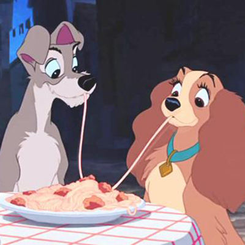

Les ingrédients
- 400g de bœuf haché
- 1 oignon
- Deux tranches de pain sans croûte
- 4 cuillères à soupe de lait
- 2 cuillères à soupe de persil haché
- 250g de spaghettis
- 2 cuillères à soupe de coulis de tomate en boîte
- 2 cuillères à soupe d’huile de tournesol
- Huile d’olive
- Sel et Poivre
La recette
- Fais tremper la mie de pain dans le lait et essore-la.
- Hache le persil et l’oignon.
- Dans un saladier rassemble toutes tes préparations puis ajoute du sel et du poivre.
- Essaye de faire des boulettes avec tes mains, utilise ta paume.
- Fais cuire les spaghettis dans une casserole d’eau salée.
- Verse l’huile dans une sauteuse posée sur feu vif et fais-y dorer les boulettes.
- Egoutte les pâtes et verse-les dans un plat creux.
- Mélange-les avec du coulis de tomate et de l’huile d’olive.
- Dispose les boulettes par-dessus et bon appétit !